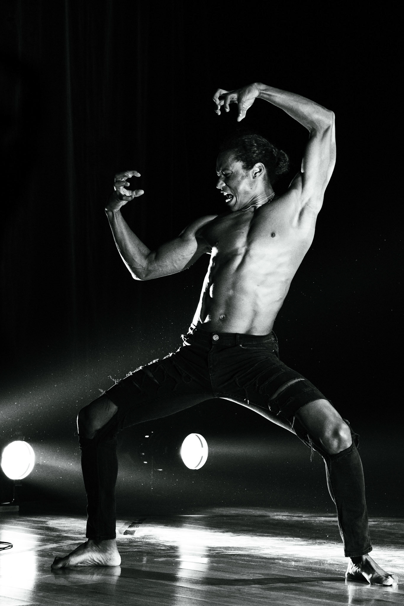

Portrait2025

Stand Up2023

Backstage2023

Live Show2023

Fashion2023
Statement
Capteuse d'âmes, je capture l'essence des regards et l'intensité des émotions.
— Audrey Knafo
acquérir un tirage →
Prototype · v2 · Forget-inspired · final palette TBD with client